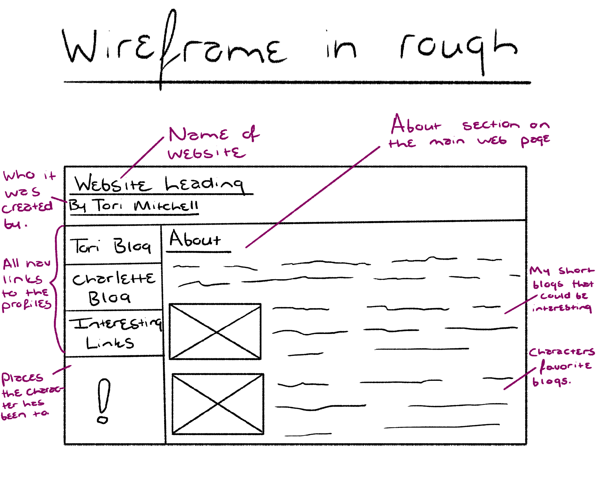
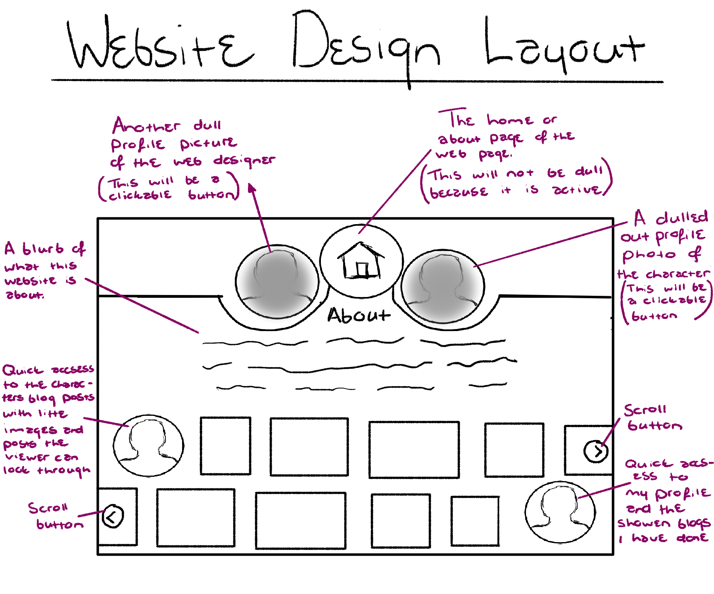

Charlette's Website
#9th Blog
My website design.
This is how I thought of designing my website layout.

So, this was my rough wireframe. With this I kept it very simple, trying not to go into the finished design of my website. This is how I want it to look before I do all the layout and final design. This is the home or about page design showing the first page that the viewer will see. I created Nav links that will take the viewer to the characters and my blog posts. On the about page I also added the "abouts" of my blog page, as well as the characters, so that the viewer can have more of an idea of the content that each will include.

Here is the rough design of my website’s final layout. This is the idea I have of how the final website page will look. The three main circles on the page will tell the viewer what page they are on. I want to try creating a dull effect over the profile pictures, so when the viewer clicks onto the dull profile, it will light up and the page they were previously on will go dull. If I am able to include this in the final design of my webpage, I think it will really allow the viewer to have some visual feedback from the website, as to what page they are on and what they are viewing.